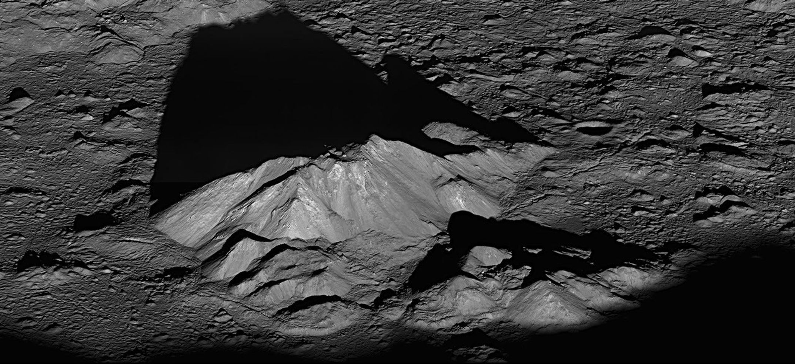
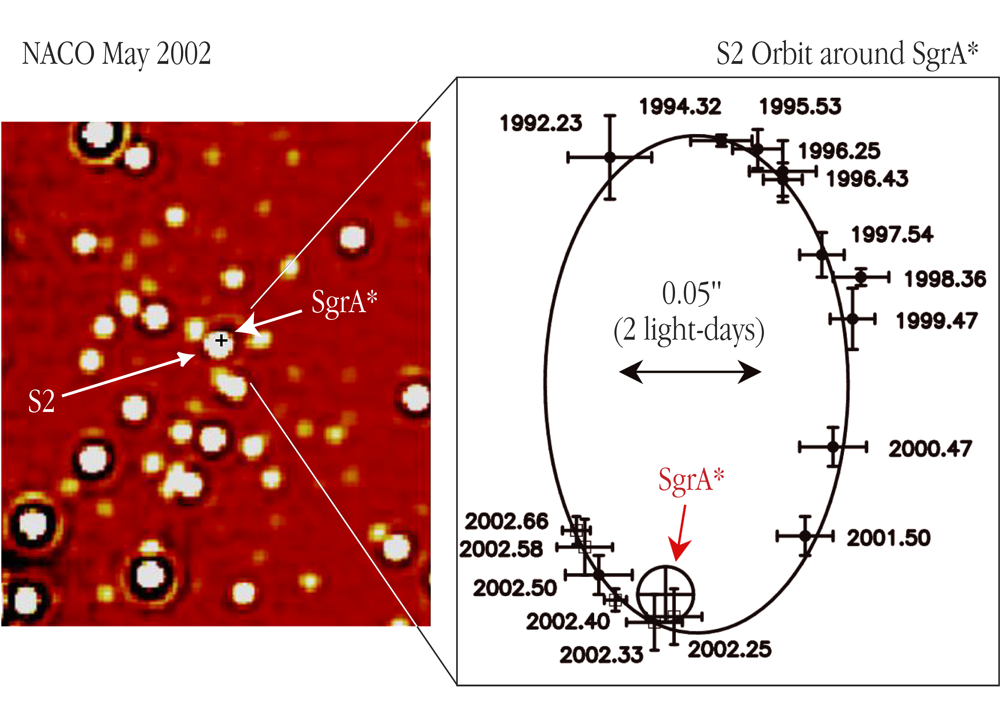
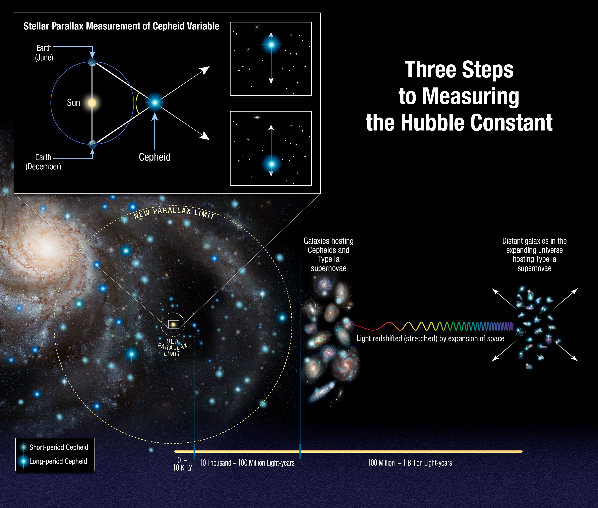

设想一次普通的夜间观测：月亮的明暗边界上有长长的山影，木星旁边几个小点正在移动，一颗红星与一颗蓝白星隔着天空相望。望远镜再转向一片暗淡的雾状光，目镜里的景象远没有机构照片那样浓烈。没有任何一个画面直接告诉我们质量、距离或年龄。可是关于宇宙的大量知识，正是从这些光出发建立起来的。
这不是某次真实活动的记录，也不要求所有目标在某一晚同时适合观看；我们借这个场景追踪几条连续的测量路线。山影把角度接到高度，卫星运动把距离与时间接到质量，星光把亮度接到距离，膨胀的遗迹又把今天的结构接到过去。一片星空可以远远超出看图认名的范围，关键在于我们怎样把可见的东西转变为有物理意义的量。
月亮明暗交界附近的地形特别醒目，因为那里的太阳在月面天空中很低，山峰与环形山壁投下长影。同一座山，在当地正午可能显得不突出，在日出附近却会拖出醒目的暗线。地形没有在几小时里大幅长高，照明角度变了。因此，想看地形层次，并不必总选择月面最圆、总光最强的时刻；月相同时决定受光范围和地形所受到的光照方向。NASA：月相与照明

图1：LRO窄角相机拍摄的第谷环形山中央峰，2011年6月10日观测，山峰和阴影展示低角度照明下的地形。此处是轨道探测器近距离斜视影像，不是小望远镜目视效果。Credit: NASA Goddard/Arizona State University。原页。
先在近似平坦的地面上讨论一个直立高度 。若太阳高度角为 ，投影长度为 ，简单几何给出 。假设影长10 km、太阳高度10°，所得高度约1.76 km；若太阳高度变成45°，同样高度的影长便只有约1.76 km。前一个角度把起伏放大到更长的阴影中。这是假设平地和明确光源方向的演算，不是对图1斜视照片直接测得的峰高；真实月面坡度、曲率和图像投影都需要修正。
影长在照片上先是像素数，要换算为千米，还需要相机几何和距离。对很小的视角，实际长度约为 ， 为距离， 必须用弧度。月面上一个1角秒的尺度，在约384400 km距离处对应约1.86 km，因为1角秒约为 弧度。望远镜若能分辨约1角秒的细节，也不表示所有1.86 km地物都容易辨认：地形对比度、观察角度、光学与大气模糊都在起作用。一个公式给出的量级，必须放回实际观测条件中。
这里有一个很容易忽略的依赖关系：我们用月球距离计算地形尺度，但距离本身从哪里来？用距离去推出大小，再拿推出的大小去证明原距离，会构成循环。幸好附近天体可以使用别的测距方式。地月激光测距把光脉冲发送到月面反射器，记录返回时间；光走了去与回两段路，所以最简单的关系是 。平均往返约2.5秒，便给出几十万千米量级的距离。精密测量还要校正地面台站位置、大气传播、仪器延时及地月运动，不能把台站到反射器距离无条件写成地月中心距离。NASA：地月激光测距
阴影、视角和光行时，用三种不同的观测构成互相支持的关系。山影给高度比例，角尺度与已知距离给横向长度，激光给独立距离。我们并没有伸一把卷尺到月面，却能逐步把图像变成地形；同样的逻辑以后会扩展到那些连探测器也尚未抵达的地方。
木星在目镜中可以显出一个圆盘，几颗明亮卫星则常排列在其两侧。一次观看只能知道它们在天空中的相对位置；连续记录几晚，便会看见小点换位，有时隐到木星后方，有时经过它的前方。从二维位置变化判断轨道，需要把投影考虑进去。卫星恰好接近木星方向时，看起来的分离很小，并不意味着它真实轨道半径突然变小。NASA：木星卫星轨道参数
当真实轨道的尺度与周期可确定以后，引力就提供了质量测量。忽略卫星质量的两体近似下，
是轨道半长轴， 是周期。取木卫一的 约421800 km、 约1.769日，先换为米与秒，得到 约 ；再用引力常数 约 ，换成木星质量约 kg。此处是依据公开参数的量级演算，精密研究还要处理其他卫星扰动、木星非球形引力场等因素。卫星参数原表
这个关系为什么值得再用一次？它让我们看见“质量”是一种通过运动获得的知识，而不是根据照片大小猜出来的属性。同样半径的轨道，周期更短，意味着更强的中心引力；同样周期，轨道尺度更大，意味着更大的中心质量。质量与尺度还强烈耦合，因为 取三次方。若真实尺度估计偏大10%，其他不变时，推出的质量会偏大约33%。距离误差因此会传递进质量测量，天文学里许多参数不是彼此独立的表格栏目。
测得质量以后，再结合行星半径，才有平均密度。密度又把问题引向组成与高压物质状态，而不会直接变成一份唯一的内部配方。卫星轨道对整体引力敏感，探测器近距离运动可以研究更细的引力场结构；照片中的云顶与动力学测得的总质量，描述的是同一个天体的不同方面。把两类证据一起使用，才有机会讨论我们无法直接观看的深处。
木星的卫星给了一套近处的范例，银河中心的恒星提供了更远、更极端的版本。银心方向受到大量星际尘埃遮挡，普通可见光照片很难直接看清最内部区域，红外观测因较小的消光而能研究那里的恒星。还需要足够高的角分辨率，将拥挤的星点分开；大口径望远镜、自适应光学和干涉技术由此进入了同一个物理问题。ESO：银河中心观测

图2：ESO于2002年发布的S2历史观测图。左为约2.1 μm近红外图，右为1992—2002年测得的位置及椭圆拟合，十字符号尺寸表示位置误差。它记录恒星运动，不是黑洞事件视界的照片。Credit: ESO。原图，CC BY 4.0。本图的旧年代测量与正文现代量级近似分别说明。
图2右边的轨迹不是一个制图者随意画出的圆环：不同日期的位置测量，逐渐描出一颗星绕共同中心运行的路径。S2的公转周期约16年，近中心时运动非常快。观测并没有看见一团四百万个太阳正在发光，却要求在很小的空间中存在几百万太阳质量的引力源。将许多普通暗星紧密堆在这里等替代图景，还要符合密度、稳定性及其他观测条件；黑洞解释之所以有说服力，是因为它能同时满足这些约束。ESO：2018年S2近心经过
在适合量级推算的单位中，开普勒关系可以写成 ， 用AU、 用年，假设运动由一个占主导的中心质量控制。以约1000 AU的轨道半长轴和16年周期为代表值，得到 ，约390万太阳质量。这里选用圆整参数解释数量级，不是从2002年小图直接重测得出的最新质量；正式轨道拟合还结合视向速度、距离与相对论修正，现代结果在约四百万太阳质量量级。ESO的现代观测背景
同一个公式从木星走到银河中心，跨度极大，但使用条件并没有因此消失。投影椭圆不等于真实轨道椭圆，天球角尺度需要距离换算，中心之外的分布质量也可能产生扰动。研究者不是只从一张图片数像素，再代入一个式子就结束；他们同时拟合多种数据。尤其是S2靠近中心时，精密光谱测得的波长变化还能检验引力红移等相对论效应，于是原来测质量的恒星，也成为研究强引力的探针。
这条路线还澄清了事件视界与潮汐破坏的区别。质量越集中，中心附近的引力场越强，但“存在黑洞”不意味着任何周围恒星立刻被吸进去。S2仍然在轨道上，潮汐破坏取决于恒星大小与内聚、到中心的距离，以及差异引力；事件视界则描述光也无法向外到达远处的因果边界。两种界限回答不同问题。图2的轨道比事件视界大得多，恒星运动证据与后来事件视界尺度的射电成像，也是互相补充的观测。ESO：S2及轨道条件
抬头看星座，恒星像固定在同一个穹顶上。这个方向模型对找目标非常有用，却故意省略了距离。两个在天球上紧挨着的亮点，可能一个离我们几十光年，另一个几千光年。星座连线不是空间中的杆件，构成连线的星也不必同龄、同源或相互束缚。银河中心在某个星座方向，同样不意味着整个星座是一群围着黑洞运行的紧邻恒星。
将距离补回来，可以从几何开始。地球在太阳两侧观察一颗近星时，近星相对于更远背景的方向略有变化，叫周年视差。视差角 传统上定义为1 AU基线对应的角度；选择视差位移最大的相隔半年时刻、使约2 AU基线近于垂直视线时，总位置变化约为 ，因此不能把总摆幅不加区别地填成 。若 用角秒，距离 用秒差距，简单关系是 ；1秒差距约3.26光年。0.1角秒的视差对应约10秒差距，即约32.6光年。NASA：视差测距
更远的星视差更小，测量变得困难。一颗星还可能因自身运动而在天球上持续移动，所以要用多时刻观测把往返的周年信号与长期自行区分；地球轨道和仪器坐标也必须处理。这不是用肉眼寻找半年后的星座变形，而是在精密位置数据中提取一个可预测的周期模式。附近几何测距为更远距离提供基准，基准一旦偏移，许多后续参数也会随之调整。
一个小小的视差角还能解释为什么行星照片里的尺度与恒星照片里的尺度如此不同。附近的月球和行星可以显示圆盘与地貌，多数恒星在普通成像中仍像点源，其图像宽度主要反映仪器和大气。我们不能因为一颗星的亮斑画得很大，就说它半径很大。要研究恒星尺寸，通常需要距离、光度、温度或更专门的直接角直径观测。这时，亮度信息开始与几何发生联系。
若一个近似各向同性光源总光度为 ，距离 处收到的单位面积通量为 ，先忽略途中吸收。通量告诉我们现在收到多少能量，光度告诉我们源每秒放出多少能量。知道距离，就可以从 反推 ；知道某类源的 ，又可以由 反推距离。问题变成：怎样先找到一类不依靠未知距离也能估计光度的天体？
造父变星提供了一座桥。它们发生规律的脉动，亮度随周期变化，而周期与平均光度存在统计关系。较长周期的这类造父变星通常更亮。利用距离已由其他方法约束的样本校准周期—光度关系，再对远处同类变星测周期与视亮度，就可以估计其距离。周期本身是时间量，遥远并不会直接使我们量不到数日到数十日的亮度循环；这让它成为连接近处几何与远处星系的工具。NASA：造父变星
这不是说所有会变亮的星都有同一条关系。不同类型的脉动星、金属丰度、尘埃消光与混入的邻星，都可能影响测距。在拥挤星场里，无法分开的邻星使目标看起来更亮，若不修正，就可能被估计得过近。不同波段有助于约束尘埃影响，较好的分辨率有助于减轻混杂，多颗变星统计可以压低一部分随机误差，但共同的校准误差仍可能保留。测距阶梯的关键是校准链，不能把每一层都说成独立的绝对尺。

图3：2018年发布的距离阶梯科学示意，依次连接视差、造父变星、Ia超新星与膨胀测量；其中包含观测图与解释图，不是一次曝光拍到的宇宙截面。Credit: NASA, ESA, A. Feild (STScI), and A. Riess (STScI/JHU)。NASA原页、同图ESA/Hubble版本与许可，CC BY 4.0。正文对Ia使用“标准化”限定；本图的2018年精度说明不当作当前精度纪录。
M33是一个能将这条路线落到具体对象的例子。2023年一项哈勃造父测光研究使用154颗造父变星，给出距离约840±11 kpc，也就是约274万光年；其校准采用大麦哲伦云样本及由食双星提供的距离。这个结果比简单的“约三百万光年”更明确地写出了方法与统计口径，但并不意味着银河外距离已经不存在系统误差。它尤其说明，一幅旋涡状图像究竟是银河内一团云还是外部星系，必须把图像结构与距离证据一起考虑。研究原文摘要
再远一些，普通造父变星难以逐个测量，Ia型超新星因极高亮度而有用。近处含造父变星、又发生过Ia超新星的星系，可以把两级接起来；之后利用更远Ia的亮度测距。实际Ia并非未经校正就全部等亮，需要按光变曲线形状、颜色等进行标准化。图3为了简洁写出的共同亮度图景，应该带着这个边界阅读。每一层都把一种能测的量与一种已校准关系结合，才能将空间尺度推得更远。NASA：距离阶梯
一个距离值的影响还可以沿这条链继续追踪。假设某源实际收到的通量没有改变，采用的距离却增加10%，由 得到的光度便增加约21%；按同一角直径估算的线性半径增加10%，按角轨道估算的半长轴也增加10%。前面的动力学质量则可能随之增加约33%。这些只是各项其他条件固定时的传播关系，正式多数据拟合中参数还会共同调整。它说明“距离表更新了一栏”有时会改变关于能量、质量和演化的整套认识，而不是仅仅把旅游路程写长一点。
这种联系也提供交叉检验机会。光谱可以估计恒星的有效温度，几何距离和通量给光度，若把恒星近似为热辐射球面， 又将它们连接到半径， 是斯特藩—玻尔兹曼常数。“有效温度”是用表面总辐射定义的温度，不表示恒星每一层都具有同样温度。较冷的红巨星可以因为半径很大而十分明亮；较热的白矮星却可以因为面积小而总光度较低。单独看红蓝颜色，无法把这些可能性分开。OpenStax：赫罗图
将大量恒星按温度和光度放到赫罗图上，就能看见主序、巨星与白矮星等不同区域。这张图的横轴不是距离，纵轴也不是我们目镜里未经校正的亮度；它把测距、测光和光谱压缩为可比较的物理状态。因此，它在一夜星空中完成了另一个转换：原先只是不同颜色和亮度的点，变成了能够讨论半径、能量来源和生命阶段的对象。将同一星团的星放在这张图上，又能研究哪些质量的恒星已经离开主序，为群体的年龄提供线索。OpenStax：用赫罗图研究演化、星团年龄与主序转折
观测路线回到那片目镜里的暗淡雾状光。它若是蟹状星云，我们看到的是超新星留下的气体与脉冲星供能环境；若是M33，则把大量恒星形成与死亡过程叠在同一个遥远系统中。两者都不像月球一样提供高对比度的地形，不仅因为距离，还因为可接收到的光分布在延展区域里。总星等可能听起来不错，单位角面积上的光却很少，亮天空背景会使这团雾难以分辨。总亮度、表面亮度与分辨能力，分别限制不同方面。
天体随时间变化，又提供另一条尺度与历史线索。蟹状星云在相隔多年的影像中显现膨胀，连续图像的价值便不是换一张更漂亮壁纸，而是测量同一结构的位移。角扩张速度与距离相乘可以得到横向速度；光谱线位移则提供沿视线速度。二者结合，在合适几何模型下还能构成膨胀视差测距的思路。模型若错误地把不同层气体配到一起，或忽略加速与冲击，距离也会受影响。时间记录与光谱因此需要互相约束。NASA：蟹状星云的多年代膨胀观测
把扩张轨迹向过去延伸，可以估计结构曾更接近共同起点的时刻，却不能无条件假定速度从爆炸以来一直不变。遗迹与周围介质相互作用，脉冲星还继续向其中注入能量。历史天文记录所述1054年新星事件、现今遗迹方向、膨胀与脉冲星性质，共同支持蟹状星云的超新星来源；其中某个量存在不确定性，不会自动把全部证据清空。NASA：M1及历史关联
这也是研究恒星演化的一种方式。我们无法坐在一颗普通恒星旁边等几十亿年，看完整个生命史；却可以研究大量不同阶段的对象，测量质量、光度、温度、化学成分与遗迹，再用同一物理模型解释它们之间的联系。星团中年龄与初始成分较接近的恒星尤其有用，因为它们为质量如何改变演化速度提供对照。所谓演化路线不是把若干漂亮照片排成必然时间顺序，而是模型必须能同时解释这些群体约束。NASA：恒星生命
地月距离对应单程光行时约1.28秒，太阳到地球约8分20秒。光年则直接把光传播一年走过的距离作为单位。位于几千光年的蟹状星云，今天到达的光在天体附近经历了几千年的传播；几百万光年外的M33更是如此。这里使用的是较近宇宙里适用的距离除以光速的直观关系。把不同方向的天体放在同一张星空照片中，并不会使我们看到它们在宇宙里同一时刻的状态。
1054年的超新星记录还带出一个时间定义问题：1054年说的是地球上的观察者收到爆发光的年代，不能据此声称源在与地球“同时”的1054年才爆炸。光到达的日期与源当地事件的日期之间，隔着传播时间；而对非常远的宇宙对象，时间与距离还要用宇宙膨胀模型定义。描述遥远历史时，先说明我们谈的是收到光的时间还是推断的源事件时间，会消除很多看似矛盾的叙述。
如果M33里发生一次新爆发，我们必须等光抵达才知道；图像能观察它的过去，不意味着我们有办法自由切换到它的现在。相隔十年的两次观测，仍然可以比较天体所发出的两个相隔约十年的状态，虽然它们都非常古老。远距离不会使过程在照片中必然静止，仪器的时间分辨率与观测间隔才决定我们能追踪多快的变化。
再走向更遥远星系时，光不仅传播，还受到宇宙膨胀的影响，波长被拉长，形成宇宙学红移。红移可以与距离测量一起研究宇宙膨胀；它不是无条件独立的卷尺，也不总能被解释为一个物体在静止空间中的普通多普勒速度。在很低红移且局部运动影响可处理的范围内，速度与距离近似成正比；到了更远的范围，需要宇宙学模型，光行距离、今天的距离和亮度距离不再是同一个数。Hogg：宇宙学中的距离定义
这层区别将“一张图上的空间”与“宇宙的历史”真正连了起来。望远镜不只是把更远的东西放大，而是在收集不同年代、不同波段的信号；距离测量决定其尺度和回望时间，辐射物理决定信号意味着什么，引力模型把运动接到物质分布。各个环节还能交叉检查：某种距离改变，质量与光度可能随之改变；某种辐射解释改变，关于气体或恒星的判断也要更新。
回到设想的观测场景，月面山影给我们几何，木卫一给我们动力学，银河中心给我们强引力，变星与超新星把测距向外延伸，遗迹的变化把空间图像接到事件史。它们使用的观测资源不同，解释路线却能彼此联通。夜空中一个看似简单的小点，可能需要多个季节的位置测量；一团暗雾，可能需要多波段与几十年的对比；黑洞附近一颗星的一段转弯，可能连接了十几年的耐心。
还有很多问题不能仅靠这几条路线一次解决。恒星与行星形成中某个具体过程的相对重要性，暗物质的微观性质，宇宙膨胀的精确历史，都需要进一步观测与理论。认识现有证据的依赖关系，不是为了把未知赶出文章，而是能说清下一种测量将改变哪里：更精确的视差改善校准，更清晰的图像减少混杂，更长的时间序列区分周期与长期变化，新的波段显现原先隐藏的物质。
于是下一次走到望远镜旁边，值得带走的可以不止一个目标名称。月面边界如何改变山影，卫星多久换到另一侧，一团雾是在发光还是遮光，一颗变星怎样让距离有了依据，这些都是能够继续延伸的问题。有限的一夜没有照亮整个宇宙，却提供了真正的出发点：从收到的光开始，一步步说明远处的世界为什么可能是我们所理解的样子。
测量来源、近似条件及素材版本见本批来源记录。本稿为综合文章初稿，未经过人工科学审校或真实试讲。